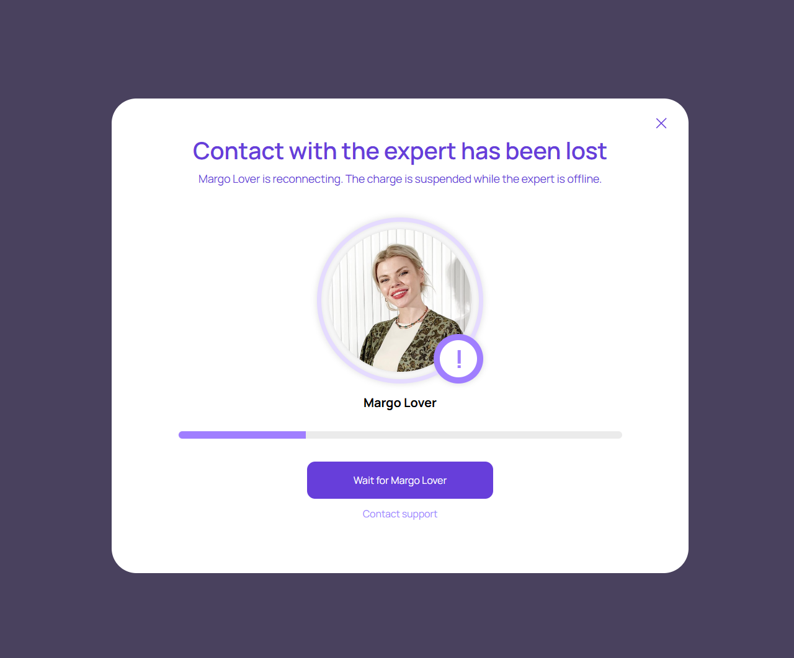
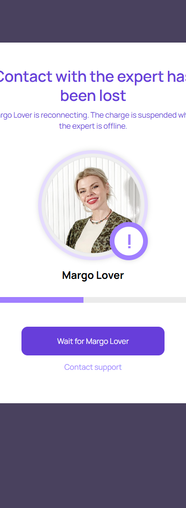

Потеря соединения
account/reconnect-grace.html
Объяснить состояние и восстановление.
| Когда открывается | Сервер подтвердил разрыв |
|---|---|
| Данные | sessionId; причина; server deadline; billing state. |
| Сценарий | Wait оставляет ожидание; Support → связанный тикет; восстановление использует прежнюю сессию и серверное время. |
| Переходы | Активная консультация · Помощь по консультации |
Длительность grace и правила списания в нем не брать из анимации. Предложение: безопасная неоплачиваемая пауза при подтвержденной невозможности услуги.
Общая и предметная логика. Снимки и подписи элементов — исходная редакция макета; поздние уточнения ТЗ имеют приоритет в своей области. Это не проверка текущего сайта.
Состояние 1280 · 1280 × 1062


Элементы и ожидаемые действия
| Элемент | Название в макете | Действие | Ожидаемый результат |
|---|---|---|---|
| E001 Скрыт в этом состоянии | Consultation status anchor | Информационный блок/область фокуса, не самостоятельная команда. | Показывать актуальные данные соответствующего сценария; фокус или чтение не выполняют мутацию. |
| E002 Виден | Dismiss reconnect status | Закрыть локальное окно или вернуться к инициатору; Stay отменяет намерение завершить. | Вернуть фокус и исходный контекст. Не выполнять оплату, удаление или Complete. При неизвестном результате платежа сначала сверить заказ. |
| E003 Виден | Wait for Margo Lover | Остаться в ожидании подтвержденной доступности/восстановления. | Не обещать бронь или срок без серверного основания; повтор не создает новую сессию. |
| E004 Виден | Contact support | Открыть/подать обращение о конкретном диалоге, консультации или платеже. | Один связанный клиентский тикет; Internal закрыт. Жалоба не выполняет возврат автоматически. |
Состояние 390 · 390 × 1062


Элементы и ожидаемые действия
| Элемент | Название в макете | Действие | Ожидаемый результат |
|---|---|---|---|
| E001 Скрыт в этом состоянии | Consultation status anchor | Информационный блок/область фокуса, не самостоятельная команда. | Показывать актуальные данные соответствующего сценария; фокус или чтение не выполняют мутацию. |
| E002 Виден | Dismiss reconnect status | Закрыть локальное окно или вернуться к инициатору; Stay отменяет намерение завершить. | Вернуть фокус и исходный контекст. Не выполнять оплату, удаление или Complete. При неизвестном результате платежа сначала сверить заказ. |
| E003 Виден | Wait for Margo Lover | Остаться в ожидании подтвержденной доступности/восстановления. | Не обещать бронь или срок без серверного основания; повтор не создает новую сессию. |
| E004 Виден | Contact support | Открыть/подать обращение о конкретном диалоге, консультации или платеже. | Один связанный клиентский тикет; Internal закрыт. Жалоба не выполняет возврат автоматически. |